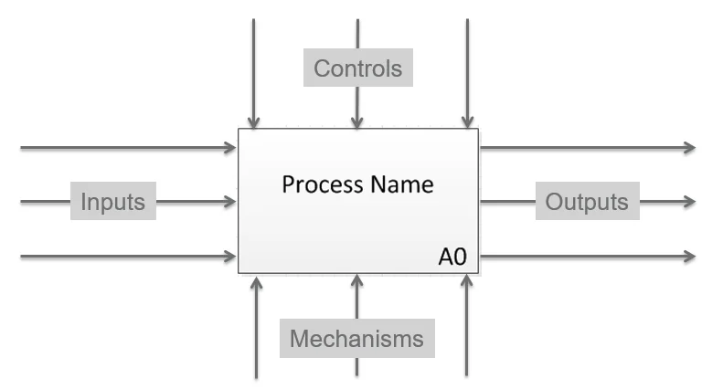
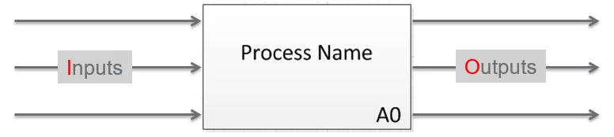
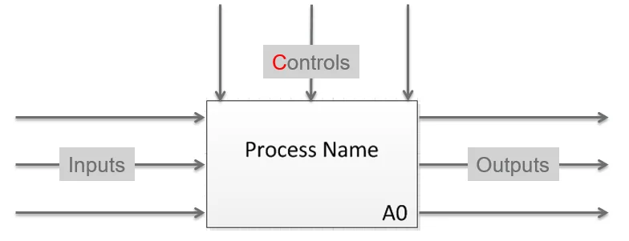
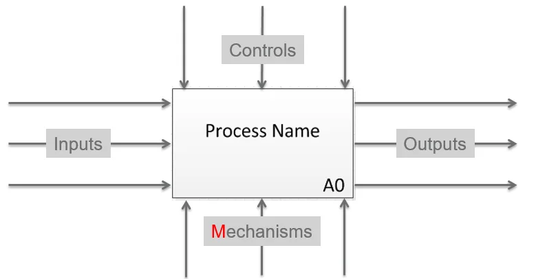
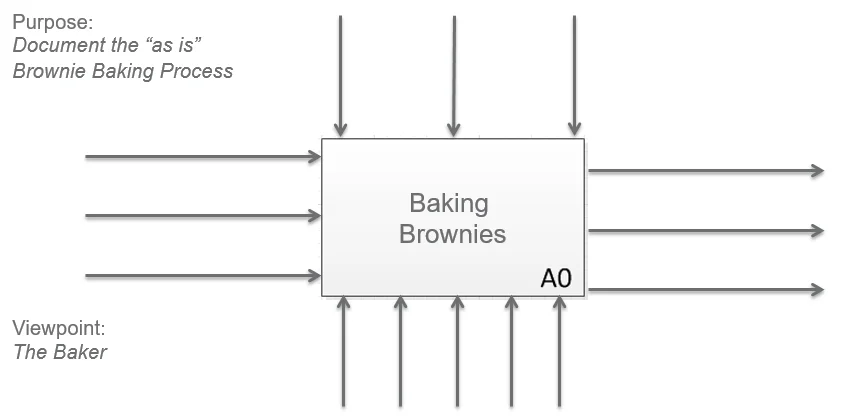
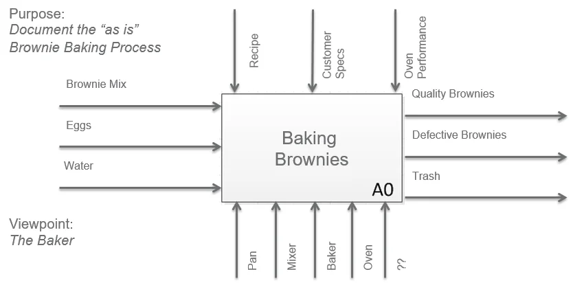

To see the forest and the trees, you develop the capability to step back and see the big picture, while simultaneously being able to zoom in and observe the trees. This series of articles will teach some practical things that will help you to cultivate this skill.
We begin by looking at some key concepts from IDEF0. This article will not make you an expert on IDEF nor provide you a detailed history of IDEF. (If you want to learn more, you can visit the Wikipedia IDEF page.) Rather, we will learn about the Context Diagram and the ICOMs. In future articles we will learn how to decompose the Context Diagram into lower levels of detail.
Define Your Context
The Context for the Context
When modeling or diagramming any process, the consultant must first define the "Context for the Context." Start by identifying the purpose, viewpoint, and the boundary of the process.
Purpose clarifies why you are studying the process, and who the intended stakeholders are. Why are you studying the process? Who is the audience that will benefit from this study? Which audience are you preparing the model for?
The viewpoint defines the lens that will be used to understand the process. From which stakeholder's viewpoint will we look at and understand the process? This becomes important because it influences how the activities of the process are articulated.
The boundary defines the scope of the process. When does the process start? When does it end?
IDEF0, The Context Diagram
The foundational construct of IDEF0 is the Context Diagram. Very simply, the context diagram provides the context of the process being studied.
The IDEF0 Context Diagram: a single box representing the boundary of the process, labeled A0.
The context diagram is comprised of a single box which represents the boundary of the process or system being studied. The box is labeled with the name of the process being studied. In the lower right corner is the "Activity ID", for the context diagram this always starts at A0 ("A" represents Activity and "0" represents level 0, the highest depiction of this process).
There are four arrows interacting with this box that represent the relevant Inputs, Controls, Outputs, and Mechanisms, these are called ICOMs. The ICOMs clarify the boundary of the process, and are discussed next.

The four ICOM arrows define the boundary of any process.
ICOMs, Inputs, Controls, Outputs, and Mechanisms
Inputs
What the process transforms or consumes
Inputs are resources that are transformed or consumed by the process to produce the output of the process. These arrows are on the left side and point into the box.
Outputs
The results of the process
Outputs are the results of the process. Outputs might be information (data) or material goods (objects) that flow out of the process. These are depicted as arrows coming out of the right side of the box.

Inputs enter from the left; Outputs exit from the right.
Controls
External factors that constrain or specify conditions
Controls are external factors that constrain the process or specify conditions required to produce the outputs that satisfy requirements. Controls might be plans, customer specifications, legislation, or industry standards. They specify the conditions to produce the correct outputs. Control arrows enter from the top of the box. Think of them as external forces that constrain or limit the process, things that must be satisfied by the process to be successful.

Controls enter from the top, external forces that constrain or guide the process.
Mechanisms
Tools and resources that enable the process
Mechanisms can be tools or the physical resources utilized within the process or activity to transform the inputs into outputs. Mechanisms may include things like specific functions (human resources), machines, or applications. It is helpful to think of mechanisms as things that mechanize the process and support the execution of the activity. These are depicted as arrows flowing up into the bottom of the box, figuratively supporting the process. Unlike inputs, mechanisms are not transformed or consumed as a result of the process.

Mechanisms enter from the bottom, they enable the process without being consumed by it.
Application: Baking Brownies
Now that we understand how to define the context of any process or system using the IDEF0 Context Diagram, let's demonstrate how simple it is by defining the context for baking brownies.
The Process
Baking Brownies
The Purpose
The purpose of this model is to describe the "as is" (current state) Brownie Baking process.
The Viewpoint
The process will be viewed from the vantage point of the Baker.
So far our context diagram looks like the following:

Context diagram for Baking Brownies, purpose and viewpoint defined, ICOMs to follow.
The Boundaries (ICOMs)
Outputs
Beginning with the end in mind, let's think about the Outputs of the Baking Brownie process. When we bake brownies what are the outputs of the process?
- Delicious Brownies
- Defective Brownies (burned batch)
- Trash
Can you think of any other outputs?
Inputs
What are the Inputs that are transformed or consumed in the brownie baking process?
- Brownie Mix
- Eggs
- Water
Can you think of any other inputs?
Mechanisms
What Mechanisms are used to turn the inputs into the outputs in the brownie baking process?
Human Resources
- The Baker
Tools & Equipment
- Mixing bowl
- Mixing Spoon
- Spatula
- Pan
- Oven
- Oven Mitt
- Cooling Rack
Can you think of any other mechanisms?
Controls
What Controls might guide or constrain the brownie baking process in some way?
Standard Operating Procedures
- Recipe
Customer Specifications (Voice of the Customer)
- Moist Chocolate Chip Fudge Brownies preferred
- Don't like dry brownies
- Nut allergies, no tree nuts or peanuts, and no ingredients from facilities that process nuts
Other Constraints or External Factors
- History of oven performance, does the oven run cool or hot? Do you need to adjust baking time or temperature to get optimal results?
Can you think of any other controls?
After identifying the ICOMs, our Context Diagram might look like this:

The completed Context Diagram for Baking Brownies, all ICOMs defined, boundary established.
If you found this article informative, please share it with your network. I'd love to hear from you in the comments and address any questions you might have.